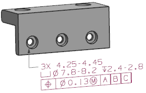

注释
使用注释  命令来创建与编辑注释和标签。注释右由文本组成，而标签由带一条或多条指引线的文本组成。
命令来创建与编辑注释和标签。注释右由文本组成，而标签由带一条或多条指引线的文本组成。
文本可以通过引用表达式、部件属性以及对象属性来导入，可以包含由控制特性序列或用户定义符号形成的符号。
|
注释 |
编辑或创建注释、标签或形位公差时，NX 在您输入各个特性时提供了直接在图形窗口中预览的功能。 |

位于何处？
|
应用模块 |
PMI |
|
工具条 |
PMI→PMI 注释下拉菜单→注释 |
|
菜单 |
产品制造信息→注释 |